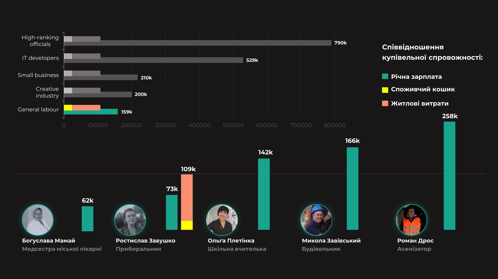

Голодні та бідні, та чи всі
Заробітня платня в Україні змінюється кожного року.
Та чи можна на неї себе прокормити?
Термін «споживчий кошик» використовується для підрахунку мінімального
споживчого бюджету українців на рік. На основі даних по споживчому
кошику розраховується мінімальна заробітня платня та пенсії.
Існує думка, що на цей споживчий кошик не можливо прожити. Та давайте
подивимось на його вартість в співвідношенні до річних зарплат різних професій.
Давайте об’єднаємо професії у категорії та вирахуємо середню зп.
Порівняймо фінансову спроможність найяскравіших представників крайніх категорій.
Дізнаємось скільки таких споживчих кошиків вони зможуть купити на свою річну зарплату.

На перший погляд все добре. Аваков може собі дозволити 70 споживчих кошиків, а звичайна медсестра майже 3.
Споживчий кошик щорічно встановлює Кабірнет Міністрів України.
Ціна споживчого кошику залежить від рівня роздрібних цін на товари і тарифів
на платні послуги (наприклад, комунальні платежі).
Проте, давайте спробуємо додати більше реалістичності цій картині:
- Мінімальний рент однокімнатної квартири по Києву (60,000грн/рік)
- її середню команулку (18,000грн/рік)
- Та витрати на громадський транспорт(4,800грн/рік)
Давайте детальніше поглянемо на категорію General labour.
А ще існує непродовольчий кошик. В нього підраховано кількість певних необхідних товарів
для населення, та термін їхнього використання. На думку держави, баночка карвалолу має
прослугувати 26 років, тобто використовувати його потрібіно по 1 крапі на рік.
Також на рік пропонується 2 шампуня, 1 кг вати та 1 бюстгалтер.
Одна краватка, так само як і плавки, можуть прослугувати вам 10 років. А от по
туалетному паперу обмеження жорстіші – за рік лише 14 рулонів.

Всі ці рекомендації встановлює Кабінет міністрів України.
Проте, звісно, міністрів вони не торкаються.